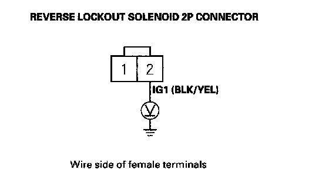
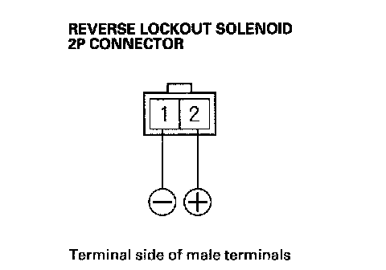
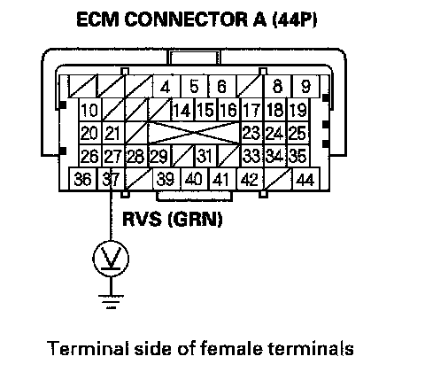

Circuit Troubleshooting
Circuit Troubleshooting1. Check the No. 3 (10 A) fuse in the under-dash fuse/relay box.
Is the fuse OK?
YES - Go to step 2.
NO - Replace the fuse, and recheck.
2. Start the engine, and check the Malfunction Indicator Lamp (MIL).
Does the MIL come on?
YES - Troubleshoot the DTC, and recheck.
NO - Go to step 3.
3. Turn the ignition switch OFF.
4. Shift into reverse.
Can you shift the transmission into reverse?
YES - Go to step 5.
NO - Repair the transmission, and recheck.
5. Turn the ignition switch ON (II). With the vehicle moving slowly (vehicle speed below 9 mph (15 km/h), shift the transmission into reverse, but do not release the clutch pedal.
Can you shift the transmission into reverse?
YES - Go to step 6.
NO - Go to step 16.
6. Raise the vehicle on the lift, make sure it is securely supported, and allow the front wheels to rotate freely.
7. Start the engine. Then shift the transmission into 1st gear and drive the vehicle until the speedometer reads above 12 mph (20 km/h).
Can you shift the transmission into reverse?
YES - Go to step 8.
NO - Intermittent failure, system is OK at this time.
8. Turn the ignition switch OFF.
9. Disconnect the reverse lockout solenoid 2P connector.
10. Turn the ignition switch ON (II).
11. Measure voltage between the reverse lockout solenoid 2P connector terminal No. 2 and body ground.

Is there battery voltage?
YES - Go to step 12.
NO - Check for loose terminals or poor connections at connector. If the connections are OK, repair open or short in the wire between No. 3 (10 A) fuse in the under-dash fuse/relay box and the reverse lockout solenoid.
12. Turn the ignition switch OFF.
13. Remove the reverse lockout solenoid.
14. At the reverse lockout solenoid side, connect the reverse lockout solenoid 2P connector terminal No.2 to the battery positive terminal, and connect the terminal No. 1 to the battery negative terminal. Make sure the reverse lockout solenoid works.

Does the reverse lockout solenoid work properly?
YES - Go to step 15.
NO - Replace the reverse lockout solenoid.
15. Reinstall the reverse lockout solenoid, and reconnect the reverse lockout solenoid 2P connector.
16. Jump the SCS line with the HDS.
17. Disconnect ECM connector A (44P).
18. Turn the ignition switch ON (II).
19. Measure voltage between ECM connector A27 and body ground.

Is there battery voltage?
YES - Check for loose terminals or poor connections at ECM connector A (44P). If necessary, update the ECM if it does not have the latest software, or substitute a known good ECM, then recheck. If the symptom/indication goes away with a known-good ECM, replace the original ECM.
NO - Repair open in the wire between the reverse lockout solenoid and ECM (A27).